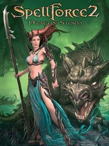

|  | |
| Playtime | Not Played |
| Last Activity | Never |
| Added | 8/19/2023 14:50:24 |
| Modified | 8/19/2023 15:03:30 |
| Completion Status | Not Played |
| Library | Steam |
| Source | Steam |
| Platform | PC (Windows) |
| Release Date | 3/20/2007 |
| Community Score | 70 |
| Critic Score | 60 |
| User Score | |
| Genre | Real Time Strategy (RTS) Role-playing (RPG) Strategy |
| Developer | Phenomic Game Development |
| Publisher | Deep Silver JoWooD Productions Software |
| Feature | Multiplayer Single Player |
| Links | Official Wikipedia |
| Tag | |
The people of Eo are in uproar: The magical portals, the only links between the shattered islands of the world, are loosing their powers, threatening to collapse completely. As more and more islands are cut off, those low on natural resources face the fate of drought and famine for their inhabitants. Streams of refugees are on their way to the lush and prosperous islands with armies following in their wake as anarchy spreads and the Realms are endangered. As a soldier of the Shaikan you are forced to partake in the fight between nations that try to escape into fertile lands in panic. So far only a few portals have broken down completely but the rising threat is spreading fear amongst the people and the lands are in turmoil...